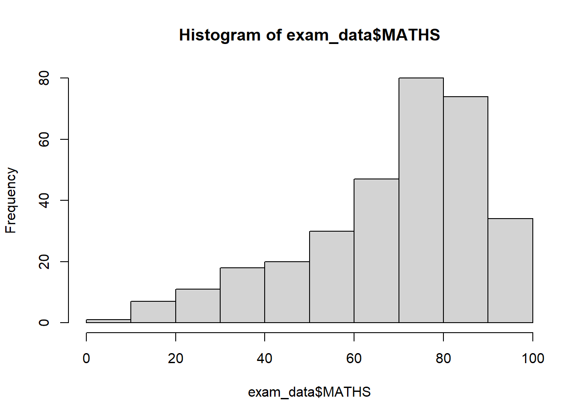
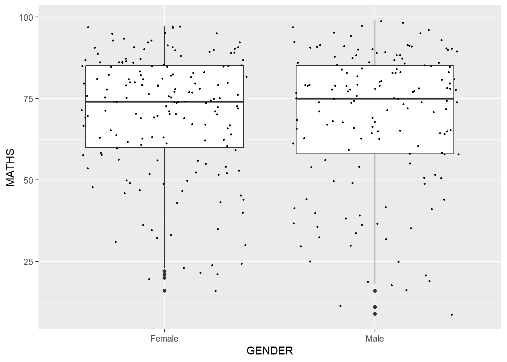

Code
pacman::p_load(tidyverse)The code chunk below uses p_load() of pacman package to check if tidyverse packages are installed in the computer. If they are, then they will be launched into R.
pacman::p_load(tidyverse)exam_data <- read_csv("data/Exam_data.csv")hist(exam_data$MATHS)
ggplot(data=exam_data, aes(x = MATHS)) +
geom_histogram(bins=10,
boundary=100,
color="black",
fill="grey") +
ggtitle("Distribution of Maths scores")
ggplot(data=exam_data)
ggplot(data=exam_data,
aes(x = MATHS))
Geometric objects are the actual marks we put on a plot. Examples include: - geom_point for drawing individual points (e.g., a scatter plot) - geom_line for drawing lines (e.g., for a line charts) - geom_smooth for drawing smoothed lines (e.g., for simple trends or approximations) - geom_bar for drawing bars (e.g., for bar charts) - geom_histogram for drawing binned values (e.g. a histogram) - geom_polygon for drawing arbitrary shapes geom_map for drawing polygons in the shape of a map! (You can access the data to use for these maps by using the map_data() function).
ggplot(data=exam_data,
aes(x = RACE)) +
geom_bar()
Note that the y-scale is not very useful and is very misleading
ggplot(data=exam_data,
aes(x = MATHS)) +
geom_dotplot(dotsize = 0.5)Bin width defaults to 1/30 of the range of the data. Pick better value with
`binwidth`.
ggplot(data=exam_data,
aes(x = MATHS)) +
geom_dotplot(binwidth = 2.5,
dotsize = 0.5) +
scale_y_continuous(NULL, breaks = NULL)
Default bin is 30
ggplot(data=exam_data,
aes(x = MATHS)) +
geom_histogram()`stat_bin()` using `bins = 30`. Pick better value with `binwidth`.
ggplot(data=exam_data,
aes(x = MATHS)) +
geom_histogram(bins=20,
color="black",
fill="light blue")
Can also be used to colour, fill and alpha of the geometric
ggplot(data=exam_data,
aes(x = MATHS,
fill = GENDER)) +
geom_histogram(bins=20,
color="grey30")
geom-density() computes and plots kernel density estimate, which is a smoothed version of the histogram.
It is a useful alternative to the histogram for continuous data that comes from an underlying smooth distribution.
The code below plots the distribution of Maths scores in a kernel density estimate plot.
ggplot(data=exam_data,
aes(x = MATHS)) +
geom_density()
Using colour or fill arguments of aes()
ggplot(data=exam_data,
aes(x = MATHS,
color = GENDER)) +
geom_density()
geom_boxplot() displays continuous value list. It visualises five summary statistics (the median, two hinges and two whiskers), and all “outlying” points individually.
The code chunk below plots boxplots by using geom_boxplot().
ggplot(data=exam_data,
aes(x = MATHS,
colour = GENDER)) +
geom_boxplot()Notches are used in box plots to help visually assess whether the medians of distributions differ. If the notches do not overlap, this is evidence that the medians are different.
ggplot(data=exam_data,
aes(y = MATHS,
x= GENDER)) +
geom_boxplot(notch = TRUE)
geom_violin is designed for creating violin plot. Violin plots are a way of comparing multiple data distributions. With ordinary density curves, it is difficult to compare more than just a few distributions because the lines visually interfere with each other. With a violin plot, it’s easier to compare several distributions since they’re placed side by side.
ggplot(data=exam_data,
aes(y = MATHS,
x = GENDER)) +
geom_violin()
geom_point() is especially useful for creating scatterplot.
ggplot(data=exam_data,
aes(x = MATHS,
y = ENGLISH)) +
geom_point()
ggplot(data=exam_data,
aes(y = MATHS,
x= GENDER)) +
geom_boxplot() +
geom_point(position="jitter",
size = 0.5)
The Statistics functions statistically transform data, usually as some form of summary. For example:
The boxplots below are incomplete because the positions of the means were not shown.
ggplot(data=exam_data,
aes(y = MATHS,
x= GENDER)) +
geom_boxplot()
ggplot(data=exam_data,
aes(y = MATHS,
x= GENDER)) +
geom_boxplot() +
stat_summary(geom = "point",
fun.y="mean",
colour="red",
size=4)Warning: The `fun.y` argument of `stat_summary()` is deprecated as of ggplot2 3.3.0.
ℹ Please use the `fun` argument instead.
ggplot(data=exam_data,
aes(y = MATHS,
x= GENDER)) +
geom_boxplot() +
geom_point(stat="summary",
fun.y="mean",
colour="red",
size=4)Warning in geom_point(stat = "summary", fun.y = "mean", colour = "red", :
Ignoring unknown parameters: `fun.y`No summary function supplied, defaulting to `mean_se()`
The scatterplot below shows the relationship of Maths and English grades of pupils. The interpretability of this graph can be improved by adding a best fit curve.
Before adding the best fit curve
ggplot(data=exam_data,
aes(x = MATHS,
y = ENGLISH)) +
geom_point()
After adding the best fit curve
Note that the default method used is loess.
ggplot(data=exam_data,
aes(x = MATHS,
y = ENGLISH)) +
geom_point() +
geom_smooth(size=0.5)Warning: Using `size` aesthetic for lines was deprecated in ggplot2 3.4.0.
ℹ Please use `linewidth` instead.`geom_smooth()` using method = 'loess' and formula = 'y ~ x'
The default smoothing method can be overridden as shown below
ggplot(data=exam_data,
aes(x = MATHS,
y = ENGLISH)) +
geom_point() +
geom_smooth(method=lm,
size=0.5)`geom_smooth()` using formula = 'y ~ x'
Facetting generates small multiples (sometimes also called trellis plot), each displaying a different subset of the data. They are an alternative to aesthetics for displaying additional discrete variables. ggplot2 supports two types of factes, namely: facet_grid() and facet_wrap.
facet_wrap wraps a 1d sequence of panels into 2d. This is generally a better use of screen space than facet_grid because most displays are roughly rectangular.
ggplot(data=exam_data,
aes(x = MATHS)) +
geom_histogram(bins=20) +
facet_wrap(~ CLASS)
facet_grid() forms a matrix of panels defined by row and column facetting variables. It is most useful when you have two discrete variables, and all combinations of the variables exist in the data.
ggplot(data=exam_data,
aes(x = MATHS)) +
geom_histogram(bins=20) +
facet_grid(~ CLASS)
The Coordinates functions map the position of objects onto the plane of the plot. There are a number of different possible coordinate systems to use, they are:
coord_cartesian(): the default cartesian coordinate systems, where you specify x and y values (e.g. allows you to zoom in or out).coord_flip(): a cartesian system with the x and y flipped.coord_fixed(): a cartesian system with a “fixed” aspect ratio (e.g. 1.78 for a “widescreen” plot).coord_quickmap(): a coordinate system that approximates a good aspect ratio for maps.By the default, the bar chart of ggplot2 is in vertical form.
ggplot(data=exam_data,
aes(x=RACE)) +
geom_bar()
Flipping the chart by using coord_flip().
ggplot(data=exam_data,
aes(x=RACE)) +
geom_bar() +
coord_flip()
The scatterplot is slightly misleading because the y-axis and x-axis range are not equal.
ggplot(data=exam_data,
aes(x= MATHS, y=ENGLISH)) +
geom_point() +
geom_smooth(method=lm, size=0.5)`geom_smooth()` using formula = 'y ~ x'
The code chunk below fixed both the y-axis and x-axis range from 0-100.
ggplot(data=exam_data,
aes(x= MATHS, y=ENGLISH)) +
geom_point() +
geom_smooth(method=lm,
size=0.5) +
coord_cartesian(xlim=c(0,100),
ylim=c(0,100))`geom_smooth()` using formula = 'y ~ x'
Themes control elements of the graph not related to the data. For example: - background colour - size of fonts - gridlines - colour of labels
Built-in themes include: - theme_gray() (default) - theme_bw() - theme_classic()
A list of theme can be found at this link. Each theme element can be conceived of as either a line (e.g. x-axis), a rectangle (e.g. graph background), or text (e.g. axis title).
ggplot(data=exam_data,
aes(x=RACE)) +
geom_bar() +
coord_flip() +
theme_gray()
A horizontal bar chart plotted using theme_classic().
ggplot(data=exam_data,
aes(x=RACE)) +
geom_bar() +
coord_flip() +
theme_classic()
A horizontal bar chart plotted using theme_minimal().
ggplot(data=exam_data,
aes(x=RACE)) +
geom_bar() +
coord_flip() +
theme_minimal()